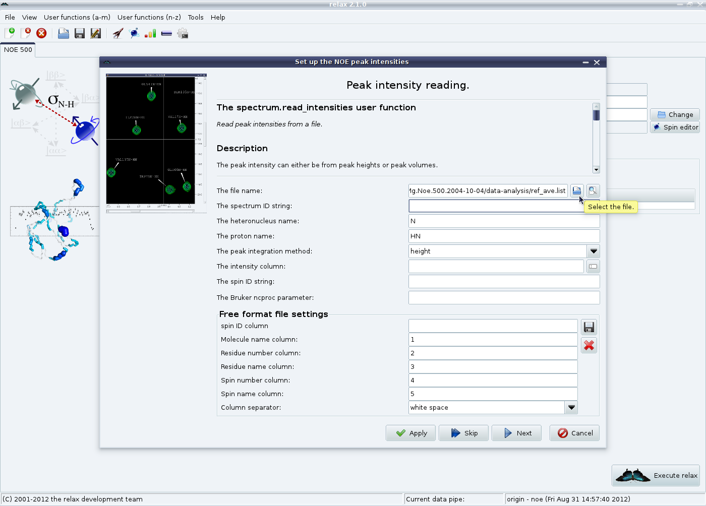
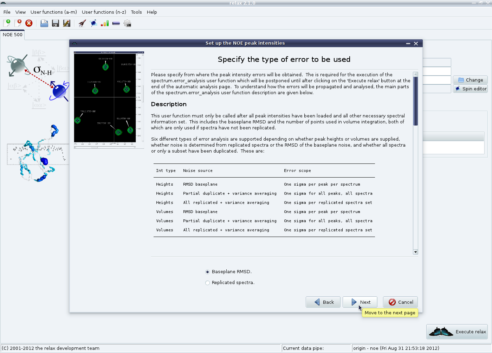
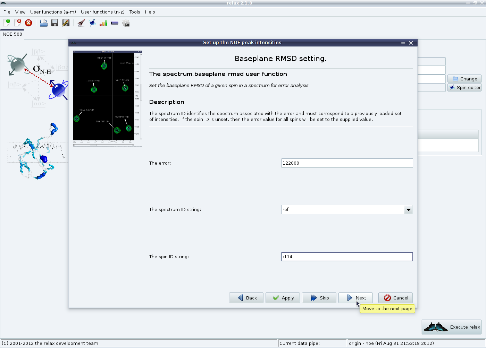
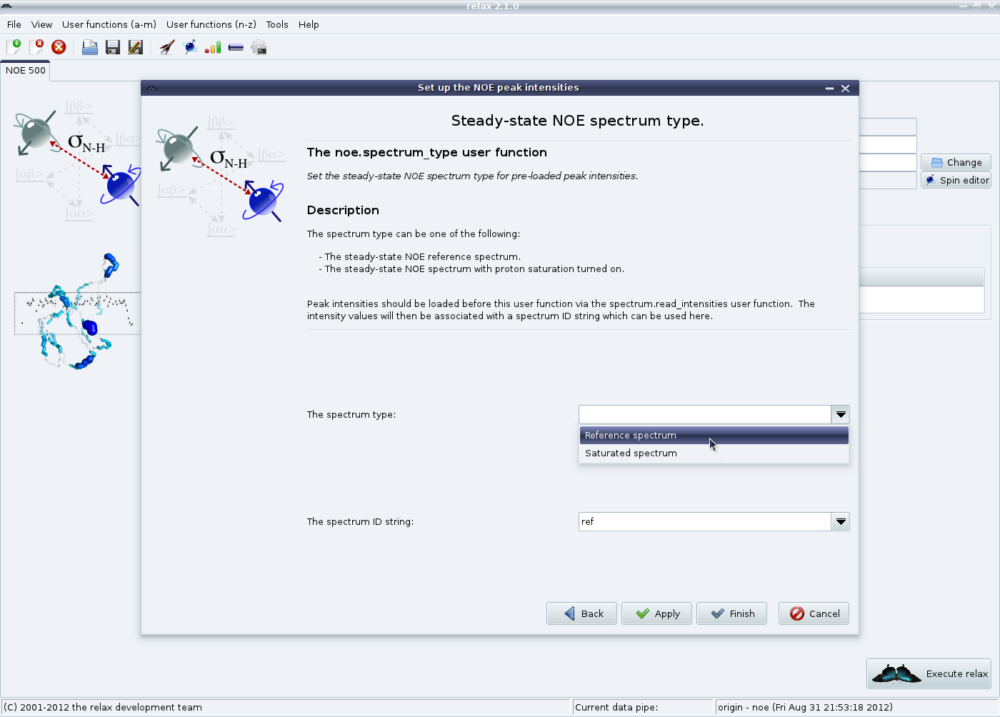

Next: NOE GUI mode - Up: The NOE auto-analysis in Previous: NOE GUI mode - Contents Index
The next step is to load the saturated and reference NOE peak lists. From the main NOE auto-analysis tab, click on the “Add” button in the “Spectra list” GUI element. This will launch the NOE peak intensity loading wizard. From the first wizard page, select the peak list file containing the reference intensities (from the averaged shift list):
|

|
Then set the obligatory spectrum ID string to a unique value (in this case “ref”). The spectral dimension may need to be changed so that the peak intensities are associated with the correct atom of the pair. In case you have forgotten the spin names or the format of the peak list next to the file name selection button is a preview button which can be used to open the peak list in the default text editor. Set the other fields as needed. Click on “Next” Note that a RelaxWarning will be thrown for all peak list entries which do not match a spin system within the relax data store. This will cause the relax controller window to appear:

|
Carefully check these warnings to be sure that the data is correctly loaded and, if everything is fine, the relax controller window can be closed. If the dimension has been wrongly specified or some other setting is incorrect a RelaxError might appear saying that no data was loaded - you will then need to fix the settings and click on “Apply” again. The error type page should now appear.
|

|
Please read the description in this window very carefully to know what to do next. In this example, we will choose “Baseplane RMSD”. For this specific example, Sparky's “Extensions→Spectrum→Spectrum baseplane RMSD” option in the “F1” selection mode was used to measure empty regions of the spectrum (mainly in the random coil region) to determine an average RMSD of approximately 3600. Set the value and click on “Apply”.

|
As glycine 114 is located close to the noise signal, its error was much higher at 122000.
Individual spin errors can be set via the spin ID string (see section 4.2.2 on page ![[*]](crossref.png) for information about spin IDs):
for information about spin IDs):
|

|
Finally select which type of spectrum this is and click on “Finish”:
|

|
The entire procedure should be repeated for the saturated spectrum (or you may have worked out that both can be loaded simultaneously by using the “Apply” button more often). For this example, the spectrum ID was set to “sat” and the baseplane RMSD to 3000 for all spins (except for G114 which had an error of 8500).
The NOE analysis tab should now look like:

|
The relax user manual (PDF), created 2019-03-08.